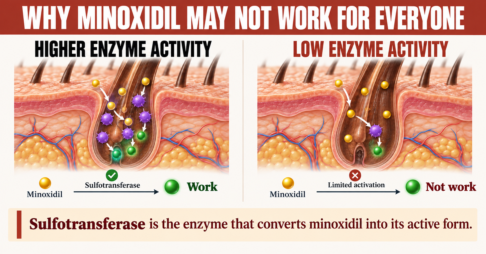
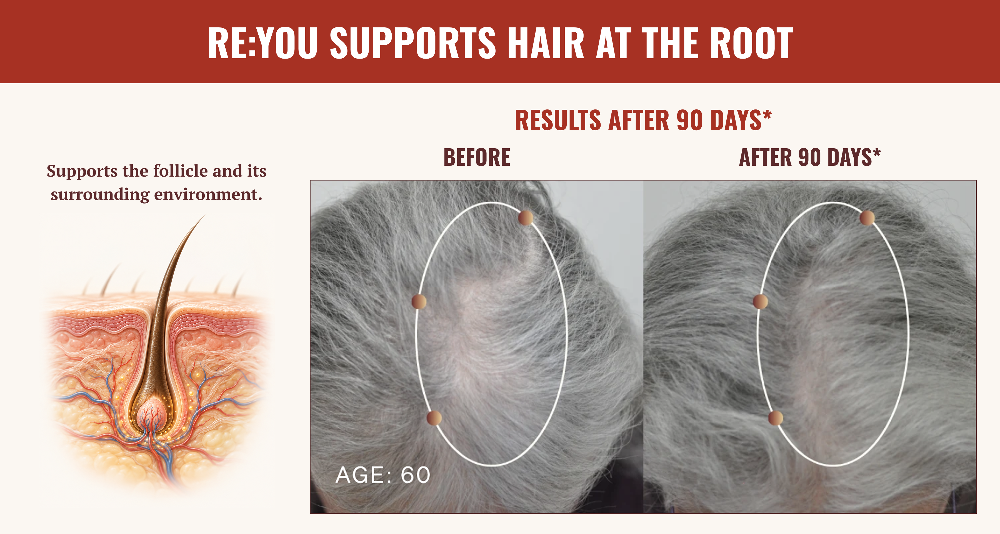
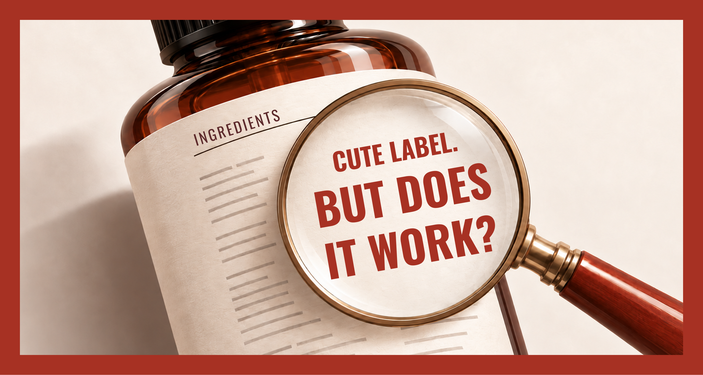
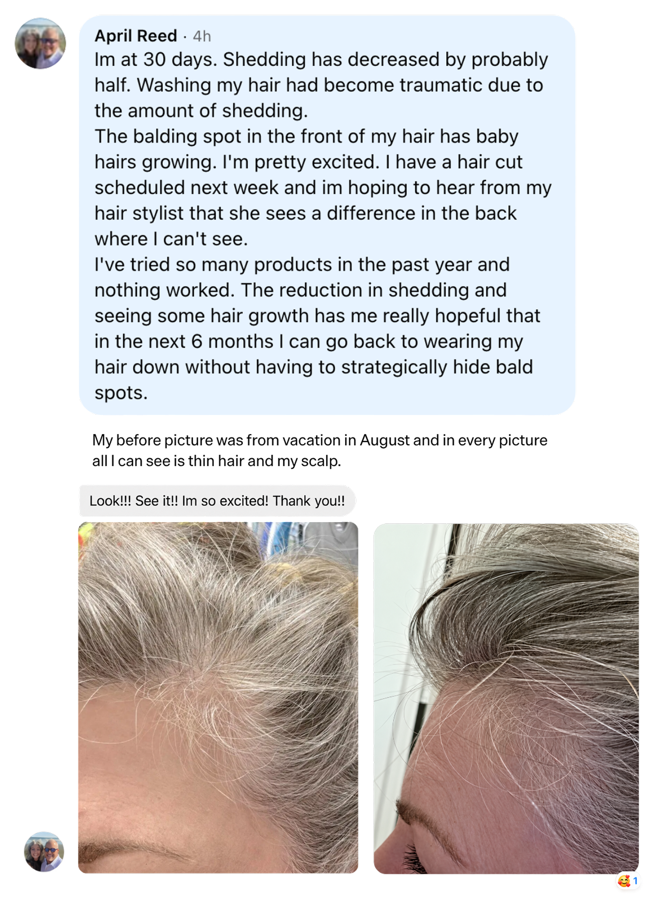

If you’re over 40 and your hair is thinning, you’ve heard the same things for years. You’re getting older. It runs in your family. Take some vitamins. Try minoxidil. Give it more time.
Meanwhile, the changes can be gradual, but the concern is often immediate. A part that looks a little wider. More hair left in the shower. A ponytail that no longer feels the same.
So you follow the instructions. You finish the bottle. You buy another one. And when your hair keeps thinning, you start wondering what you’re doing wrong.
Before I explain the science, I want to say something clearly: hair thinning is not your fault. And when a product does not deliver the results you hoped for, that does not mean you did something wrong. Many products were not designed to address hair thinning in the first place.
As a chemical engineer and synthetic biologist, I look at the biology underneath the change you can see. What is happening inside the follicle? What is affecting its ability to produce hair? And does the product you’re using actually address that process?
Those questions are why I helped create RE:YOU. But first, we need to clear up five things women keep being told.
Myth 1
“Minoxidil works for everyone.”
The truth
Your follicle biology determines whether minoxidil works.
What the science tells us
If the same ingredient worked for everyone, we wouldn’t have so many people applying it faithfully and wondering why nothing is changing.
Here’s one reason that happens. Topical minoxidil relies on enzymes in your hair follicles to convert it into its active form, but enzyme activity varies from person to person and some may not even have enough to activate minoxidil effectively.
That matters when you’ve spent months organizing your routine around a treatment. You remember every application. You keep waiting for the change you were told to expect. And then you’re told to be more consistent.
Consistency cannot explain every disappointing result. Sometimes the biology that a treatment depends on simply isn’t responding the way you hoped.
Your biology deserves more than a false promise of one-size-fits-all.
That is one reason I believe we need to keep developing additional options.

Myth 2
“You’re losing your hair because you’re getting older. That’s just how it goes.”
The truth
Hormones, genetics, and follicle health shape how your hair changes.
What the science tells us
Your age tells me how many birthdays you’ve had. It doesn’t tell me exactly why your hair is thinning.
Two women can be the same age and have very different hair. One notices a wider part during perimenopause. Another first notices thinning years later. Female pattern hair loss becomes more common after menopause, but there isn’t one birthday when everyone’s follicles suddenly behave the same way.
Your follicle is a living structure. Cells inside it communicate through biological signals that help regulate growth. Hormonal changes, inherited sensitivity, and changes in the follicle’s surrounding environment can affect that process.
The strand you see is what the follicle produces. By the time your ponytail feels smaller, something beneath the surface may already have been changing.
Calling all of that “just aging” doesn’t explain the biology. And it certainly doesn’t explain why you should stop looking for answers.

Myth 3
“Vitamins, peptides, and botanicals will fix my thinning hair.”
The truth
An ingredient list isn’t proof that a finished formula works.
What the science tells us
Each comes with a different question that the label often leaves unanswered.
With vitamins, the question is whether you’re deficient. If your body already has enough of a nutrient, taking more doesn’t automatically make your follicles produce more hair. And swallowing a supplement (or absorbing it into your bloodstream) isn’t proof that it addresses the process causing your thinning.
With peptides, the question is delivery. Your skin is a barrier. A peptide needs to remain stable, get through that barrier, and reach the relevant cells in a useful amount. Its size, chemistry, and formulation all matter. Evidence from an injected peptide doesn’t establish that the same ingredient will deliver the same result when rubbed onto your scalp.
With botanicals, “natural” doesn’t automatically mean it will help your hair. A plant extract can sound reassuring on a label (especially when several extracts are combined into a blend and given a trademarked name), but adding more extracts to a serum doesn’t prove it addresses the biology behind thinning. I want to know what those ingredients do, whether the formula delivers them where they need to go, and whether the finished product has been shown to make a difference. “Natural” alone doesn’t answer any of those questions.
You deserve more than familiar ingredients repackaged as a breakthrough.

Myth 4
“What works for men’s hair loss is all women need.”
The truth
Women need treatments tested with their needs in mind.
What the science tells us
Women deserve more than the assumption that an existing treatment will fit your biology, your health, and your daily lives.
Take finasteride (fun fact - it was originally approved to treat an enlarged prostate). Its hair-loss indication is for men, and it must not be used during pregnancy because it can harm a developing male fetus. Those risks show why a treatment’s suitability for women cannot simply be assumed.
Then there’s oral minoxidil, prescribed off-label for hair loss. Because it acts throughout the body, its effects aren’t confined to the hair on your head. Potential side effects include unwanted facial or body hair, lightheadedness, swelling, and a faster heartbeat. Those considerations shouldn’t be buried beneath a promise of thicker hair.
Even the experience of applying a topical treatment matters. Irritation, flaking, and interference with styling can make a daily routine harder to maintain.
You’re trying to feel comfortable with your hair again. A routine that leaves you worrying adds another problem to your day.
And when you look for another option, you can end up facing cosmetic serums with empty promises.
You deserve research built around your needs, and products clinically proven to work in people like you.
Myth 5
“It’s genetic, so there’s nothing you can do.”
The truth
Genetic hair loss can still respond to treatment.
What the science tells us
There are two problems with that statement. It assumes genetics explains every case of hair loss. Then it assumes an inherited tendency means nothing can change.
Hair loss has multiple causes. Illness, major stress, childbirth, rapid weight loss, and inadequate nutrition can trigger shedding. Someone can also have more than one cause at the same time. That’s why two people noticing more hair in the shower may need very different explanations. And treatments for hereditary hair loss exist precisely because biology can be influenced.
As a scientist, I want to understand how that inherited tendency shows up inside the follicle. Which cells are affected? Which signals change? Where might we be able to intervene?
“It runs in your family” should begin a conversation about your hair, not end it.
That’s Why We Created RE:YOU
I kept coming back to the same frustration: women were being asked to keep trying products without getting a clear explanation of what those products were supposed to change.
With RE:YOU, we started with the follicle itself.
Our scientists used AI-assisted discovery to screen approximately 20 million molecules, then moved promising candidates through laboratory testing and refinement. That work led to NOVOGRO™: three proprietary molecules developed around complementary aspects of follicle biology and the surrounding scalp environment.
The practical goal was equally important. A lightweight daily serum that fits into your routine without leaving your hair feeling coated. Something designed around the reality that you still have to get dressed, style your hair, and get on with your day.
But developing the molecules and making the serum were only part of the work. We also needed to test the finished formula.
So we put the finished serum to the test.
We commissioned an independent, randomized, double-blind clinical trial conducted by Eurofins. The study enrolled 190 women aged 35–70 with mild to moderate female pattern hair loss and compared RE:YOU with topical minoxidil.
The published interim results at 90 days reported:
The study used scalp imaging and clinical assessments to evaluate changes beyond participants’ impressions, so there’s no way to cheat.
You deserve more than another promise.
If you’ve spent months, or years, trying products and watching your hair keep thinning, I understand why another bottle might be hard to believe in. Every time you start again, you’re investing money, time, and the hope that this one will finally make a difference.
That’s why I helped create RE:YOU. I wanted to build a company that takes your concern seriously, starts with the biology of the follicle, and tests the finished formula so you can see the evidence for yourself.
And I know that choosing to try something new still takes trust. That’s why we also back RE:YOU with a 90-day money-back guarantee.
What Women On RE:YOU Are Saying
